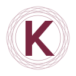
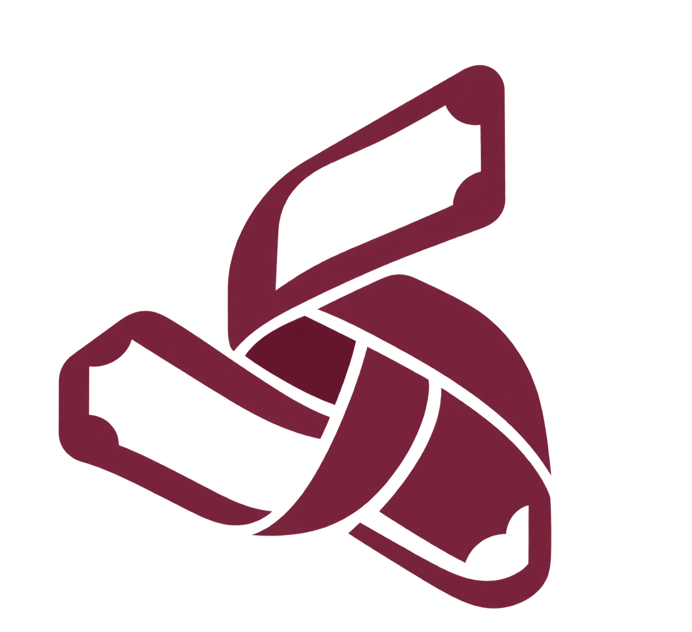

Karama-KoVotre salaire prend forme.
Des billets pliés qui s’entrelacent en un seul symbole. Une image originale, puis une vectorisation fidèle de ses contours et de ses découpes.


De l’image au SVG
Les mêmes formes, unies en bordeaux pour rester nettes en petit.
Télécharger l’image originale





24 · 40 · 64 px
SVG vectoriels, fond transparent. Palette claire et sombre automatique. Le chargement flotte et se colore en boucle. Les autres états se colorent et bougent une fois : rebond de confirmation, secousse d’erreur, bascule hors connexion et arrivée douce de l’état vide. L’animation respecte la préférence de réduction des mouvements. Cliquez sur chaque état pour télécharger son SVG.